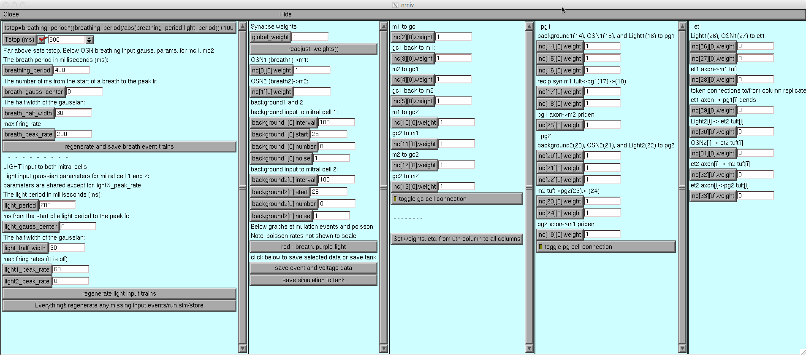
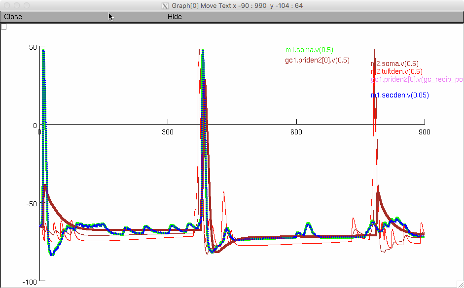

This is the readme for the models and computer code associated with the paper Short SM, Morse TM, McTavish TS, Shepherd GM, Verhagen JV (2016) Respiration gates sensory input responses in the Mitral Cell layer of the Olfactory Bulb. PLOS ONE This archive was contributed by Dr T Morse. NEURON simulator code and matlab code is available for this publication from ModelDB accession number 183300. The NEURON simulator is freely available from http://www.neuron.yale.edu. This archive contains the NEURON code for the paper. The model contained a 2 column network which includes a neural network of 2 mitral cells (mc), 2 peri-glomerular cells (pg) and 2 grantule cells (gc), and 2 external tufted cells (et). The model can also be reconfigured to have multiple columns. The mc and pg cells are stimulated with synaptic events that are from gaussian probability poisson rate breath and simulated light stimulated Olfactory Sensory Neurons (OSNs). The method to explore the gating of the breath cycle for light stimuli that start at different phases throughout the breath cycle: the breath and simulated light gaussians have slightly different periods for example, 400 ms and 399 ms. After 400 breath repetitions, the periods wrap through all possible phase diffences (at 1 ms steps). For higher resolution statistics using breath and light periods differing by .25 ms (e.g. 400, 399.75 ms) produce four times as much data, and this was the setting for most results in the paper. NEURON code Usage: Serial computer (desktop or laptop): Either auto-launch from ModelDB or download and extract this archive, compile the mod files (see https://senselab.med.yale.edu/ModelDB/NEURON_DwnldGuide.html help for more details) and start with mosinit.hoc (nrngui mosinit.hoc on the unix/linux command line, double click on mosinit.hoc on mswin file explorer, or drag and drop mosinit.hoc onto the nrngui icon on the mac os x platform). The configuration of this model corresponds to the full two column version shown in supporting information figure S6a. The ET cells are not connected in the default run however can easily be turned on by (if on a small screen you may have to drag open the research configuration panel to see the right of that dialog box) changing all the weights in the ET column from 0 to 1 (right click below and select view image if you want ane xpanded view):  This demo code runs the full model for a short period (just two breath cycles) and generates a graph of the voltages for some of the cells:  This version of the code records the pg cell activity as was used to generate the polar plots in supporting information figure S4 orange and light orange traces. Note that the simulations under all the run_X folders were run (see below for more details) to generate the data for S4 and that for the data analysis the run_test folder needs to renamed to something like prefix_run_test so that the matlab code does not look to where this serial demo writes files (run_test). Parallel (supercomputer or cluster or small serial computer batches): Instructions to run the model on the NSG or a cluster (was run on Louise at Yale HPC): there are additional instructions in readme.NSG and readme.louise. Note that the NSG method was also used to generate small batch run folders/files that could then be run on a serial computer. See the alternate models in the pop-up list under the model file tab in modeldb accession 183300 to find the matlab and other code versions available for this paper.